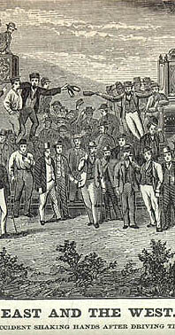

CLICK TO
ENLARGE
|
While in the woods and corn fields on
one side of the Mississippi armies from the North and
South fought a war, in the mountains and deserts on the
other side 1000's of men (mostly Chinese and Irish)
began building an iron roadway that would bring East
and West closer together. Built west from San Francisco
and east from Omaha, the two tracks were joined at
Promontary Point, Utah, on 8 May 1869. In Roughing
It MT says very little about the railroad: for
comparison purposes, he follows his account of
traveling by stage coach at THE END OF CHAPTER 4 by
quoting an early description of traveling across the
country by train from the 28 June 1869 New York
Times. Though he doesn't call attention to it, his
"West" of stagecoach drivers and pony express riders
was already being replaced by the "West" described in
accounts like the one in CROFUT'S TOURIST'S GUIDE
(1872): a land where train tracks and telegraph poles
were increasingly part of the landscape. At least,
re-presentations of that landscape during the years
1861-1873, between MT's heading west and the appearance
of Roughing It often made America's
technological and other achievements in "civilizing"
the territory as prominent as the territory itself, as
in the two 1871 "pictorial guide books" listed
below: their colored-illustrations organize "the
West" around the route of the newly opened railroad,
while the train and its impressively engineered route
are at the center of nearly all the images.
|